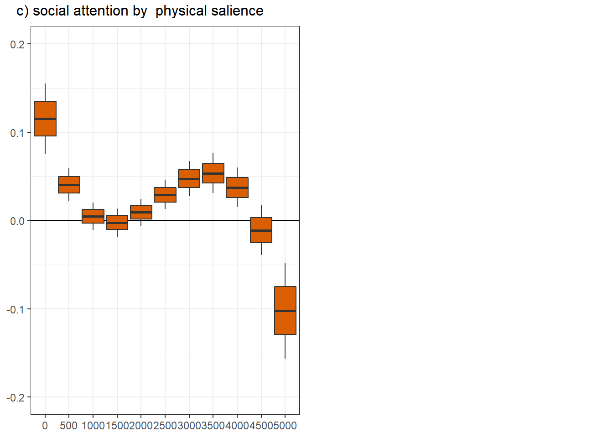
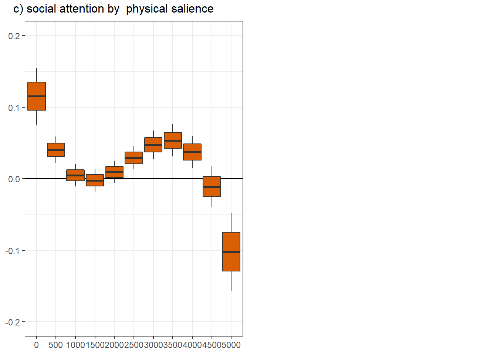

MAIN ANALYSES
sensory salience
2.5 % 97.5 %
vid_socialTRUE -0.4 -0.66 -0.13 2.5 % 97.5 %
rpd_lag -0.21 -0.34 -0.07 contrast estimate SE df asymp.LCL asymp.UCL
FALSE - TRUE 0.204 0.0789 Inf 0.0498 0.359
Results are averaged over the levels of: t1_diagnosis, t1_sex
Note: contrasts are still on the scale(0.121, 0.122) scale
Degrees-of-freedom method: asymptotic
Confidence level used: 0.95 vid_social rpd_lag.trend SE df asymp.LCL asymp.UCL
FALSE -0.2994 0.0671 Inf -0.431 -0.1678
TRUE -0.0833 0.0810 Inf -0.242 0.0754
Results are averaged over the levels of: t1_diagnosis, t1_sex
Degrees-of-freedom method: asymptotic
Confidence level used: 0.95 | Sum Sq | df1 | df2 | F | p | p_adj | |
|---|---|---|---|---|---|---|
| group | 2.314 | 1 | 37020.522 | 2.678 | 0.102 | 0.306 |
| pupillary response (PR) | 16.532 | 1 | 53651.559 | 19.137 | 0.000 | 0.000 |
| video category (VC) | 12.049 | 1 | 299.616 | 13.948 | 0.000 | 0.000 |
| time^1 | 0.438 | 1 | 67423.958 | 0.507 | 0.477 | 1.000 |
| time^2 | 0.071 | 1 | 67445.586 | 0.083 | 0.774 | 1.000 |
| time^3 | 0.002 | 1 | 67452.971 | 0.003 | 0.958 | 1.000 |
| sex | 0.000 | 1 | 236.142 | 0.000 | 0.991 | 1.000 |
| age | 0.701 | 1 | 263.725 | 0.811 | 0.369 | 1.000 |
| perceptual IQ | 1.299 | 1 | 259.547 | 1.503 | 0.221 | 0.663 |
| ADHD inattention | 1.954 | 1 | 266.202 | 2.262 | 0.134 | 0.402 |
| anxiety | 0.418 | 1 | 203.650 | 0.483 | 0.488 | 1.000 |
| depression | 0.039 | 1 | 217.730 | 0.046 | 0.831 | 1.000 |
| accuracy | 1.664 | 1 | 297.966 | 1.926 | 0.166 | 0.498 |
| precision | 0.062 | 1 | 364.617 | 0.071 | 0.789 | 1.000 |
| center deviation | 732.059 | 1 | 60610.680 | 847.433 | 0.000 | 0.000 |
| luminance | 573.826 | 1 | 66932.153 | 664.262 | 0.000 | 0.000 |
| group x PR | 1.817 | 1 | 56980.910 | 2.104 | 0.147 | 0.441 |
| group x VC | 0.019 | 1 | 29940.180 | 0.022 | 0.881 | 1.000 |
| PR x VC | 6.255 | 1 | 29550.953 | 7.241 | 0.007 | 0.021 |
| group x time^1 | 0.158 | 1 | 67419.609 | 0.183 | 0.669 | 1.000 |
| group x time^2 | 0.007 | 1 | 67442.774 | 0.008 | 0.930 | 1.000 |
| group x time^3 | 0.034 | 1 | 67450.756 | 0.039 | 0.843 | 1.000 |
| PR x time^1 | 0.075 | 1 | 67427.198 | 0.087 | 0.768 | 1.000 |
| PR x time^2 | 0.009 | 1 | 67448.675 | 0.010 | 0.920 | 1.000 |
| PR x time^3 | 0.073 | 1 | 67455.560 | 0.085 | 0.771 | 1.000 |
| VC x time^1 | 0.678 | 1 | 67447.563 | 0.785 | 0.376 | 1.000 |
| VC x time^2 | 0.222 | 1 | 67460.945 | 0.257 | 0.612 | 1.000 |
| VC x time^3 | 0.252 | 1 | 67459.443 | 0.292 | 0.589 | 1.000 |
| group x PR x VC | 0.067 | 1 | 31005.862 | 0.078 | 0.780 | 1.000 |
| group x PR x time^1 | 0.088 | 1 | 67423.880 | 0.102 | 0.749 | 1.000 |
| group x PR x time^2 | 0.000 | 1 | 67446.835 | 0.000 | 0.994 | 1.000 |
| group x PR x time^3 | 0.071 | 1 | 67453.892 | 0.082 | 0.774 | 1.000 |
| group x VC x time^1 | 1.094 | 1 | 67432.367 | 1.266 | 0.261 | 0.783 |
| group x VC x time^2 | 1.129 | 1 | 67446.405 | 1.307 | 0.253 | 0.759 |
| group x VC x time^3 | 0.966 | 1 | 67447.217 | 1.118 | 0.290 | 0.870 |
| PR x VC x time^1 | 0.717 | 1 | 67447.386 | 0.829 | 0.362 | 1.000 |
| PR x VC x time^2 | 0.277 | 1 | 67460.647 | 0.321 | 0.571 | 1.000 |
| PR x VC x time^3 | 0.312 | 1 | 67458.853 | 0.361 | 0.548 | 1.000 |
| group x PR x VC x time^1 | 0.963 | 1 | 67432.165 | 1.115 | 0.291 | 0.873 |
| group x PR x VC x time^2 | 0.993 | 1 | 67446.518 | 1.149 | 0.284 | 0.852 |
| group x PR x VC x time^3 | 0.845 | 1 | 67446.717 | 0.978 | 0.323 | 0.969 |
| Sum Sq | df1 | df2 | F | p | p_adj | |
|---|---|---|---|---|---|---|
| group | 1.035 | 1 | 34071.971 | 1.164 | 0.281 | 0.843 |
| pupillary response (PR) | 1.691 | 1 | 41090.176 | 1.901 | 0.168 | 0.504 |
| video category (VC) | 3.475 | 1 | 277.584 | 3.907 | 0.049 | 0.147 |
| time^1 | 1.526 | 1 | 67504.763 | 1.716 | 0.190 | 0.570 |
| time^2 | 0.691 | 1 | 67515.544 | 0.777 | 0.378 | 1.000 |
| time^3 | 0.291 | 1 | 67517.297 | 0.327 | 0.567 | 1.000 |
| sex | 0.022 | 1 | 241.132 | 0.024 | 0.876 | 1.000 |
| age | 0.063 | 1 | 275.941 | 0.071 | 0.790 | 1.000 |
| perceptual IQ | 0.354 | 1 | 256.233 | 0.397 | 0.529 | 1.000 |
| ADHD inattention | 0.883 | 1 | 288.214 | 0.993 | 0.320 | 0.960 |
| anxiety | 0.028 | 1 | 195.988 | 0.031 | 0.861 | 1.000 |
| depression | 0.048 | 1 | 220.586 | 0.053 | 0.817 | 1.000 |
| accuracy | 1.750 | 1 | 367.650 | 1.967 | 0.162 | 0.486 |
| precision | 2.322 | 1 | 480.455 | 2.611 | 0.107 | 0.321 |
| center deviation | 116.435 | 1 | 50057.135 | 130.917 | 0.000 | 0.000 |
| luminance | 71.875 | 1 | 66826.961 | 80.814 | 0.000 | 0.000 |
| group x PR | 1.074 | 1 | 45373.364 | 1.207 | 0.272 | 0.816 |
| group x VC | 0.236 | 1 | 17058.036 | 0.265 | 0.607 | 1.000 |
| PR x VC | 1.408 | 1 | 15371.712 | 1.583 | 0.208 | 0.624 |
| group x time^1 | 0.430 | 1 | 67501.069 | 0.484 | 0.487 | 1.000 |
| group x time^2 | 0.102 | 1 | 67509.458 | 0.115 | 0.735 | 1.000 |
| group x time^3 | 0.008 | 1 | 67510.630 | 0.010 | 0.922 | 1.000 |
| PR x time^1 | 0.043 | 1 | 67506.979 | 0.049 | 0.825 | 1.000 |
| PR x time^2 | 0.475 | 1 | 67516.948 | 0.534 | 0.465 | 1.000 |
| PR x time^3 | 0.884 | 1 | 67518.046 | 0.994 | 0.319 | 0.957 |
| VC x time^1 | 20.788 | 1 | 67514.912 | 23.373 | 0.000 | 0.000 |
| VC x time^2 | 29.605 | 1 | 67519.463 | 33.287 | 0.000 | 0.000 |
| VC x time^3 | 33.605 | 1 | 67518.870 | 37.785 | 0.000 | 0.000 |
| group x PR x VC | 0.156 | 1 | 17746.994 | 0.175 | 0.675 | 1.000 |
| group x PR x time^1 | 0.309 | 1 | 67503.532 | 0.348 | 0.555 | 1.000 |
| group x PR x time^2 | 0.065 | 1 | 67510.490 | 0.073 | 0.786 | 1.000 |
| group x PR x time^3 | 0.003 | 1 | 67510.893 | 0.003 | 0.957 | 1.000 |
| group x VC x time^1 | 0.026 | 1 | 67506.595 | 0.029 | 0.865 | 1.000 |
| group x VC x time^2 | 0.376 | 1 | 67511.296 | 0.423 | 0.516 | 1.000 |
| group x VC x time^3 | 0.891 | 1 | 67511.223 | 1.001 | 0.317 | 0.951 |
| PR x VC x time^1 | 18.730 | 1 | 67515.466 | 21.060 | 0.000 | 0.000 |
| PR x VC x time^2 | 27.538 | 1 | 67520.065 | 30.963 | 0.000 | 0.000 |
| PR x VC x time^3 | 31.424 | 1 | 67519.192 | 35.332 | 0.000 | 0.000 |
| group x PR x VC x time^1 | 0.017 | 1 | 67506.800 | 0.019 | 0.890 | 1.000 |
| group x PR x VC x time^2 | 0.319 | 1 | 67511.523 | 0.359 | 0.549 | 1.000 |
| group x PR x VC x time^3 | 0.770 | 1 | 67511.354 | 0.866 | 0.352 | 1.000 |
vid_social ts.scene rpd_lag.trend SE df asymp.LCL asymp.UCL
FALSE 1000 -0.360 0.0688 Inf -0.4951 -0.2252
TRUE 1000 0.155 0.0826 Inf -0.0071 0.3168
FALSE 3000 0.346 0.0909 Inf 0.1675 0.5240
TRUE 3000 -0.231 0.1023 Inf -0.4317 -0.0306
Results are averaged over the levels of: t1_diagnosis, t1_sex
Degrees-of-freedom method: asymptotic
Confidence level used: 0.95 pupillary response
| Sum Sq | df1 | df2 | F | p | p_adj | |
|---|---|---|---|---|---|---|
| group | 0.108 | 1 | 302.734 | 0.156 | 0.693 | 1.000 |
| video category (VC) | 13.741 | 1 | 81.699 | 19.740 | 0.000 | 0.000 |
| time^1 | 1.505 | 1 | 67260.232 | 2.161 | 0.142 | 0.426 |
| time^2 | 1.521 | 1 | 67263.056 | 2.185 | 0.139 | 0.417 |
| time^3 | 1.117 | 1 | 67261.557 | 1.604 | 0.205 | 0.615 |
| sex | 0.423 | 1 | 303.953 | 0.607 | 0.436 | 1.000 |
| age | 0.114 | 1 | 311.600 | 0.164 | 0.686 | 1.000 |
| perceptual IQ | 2.074 | 1 | 311.799 | 2.979 | 0.085 | 0.255 |
| ADHD inattention | 0.195 | 1 | 308.816 | 0.280 | 0.597 | 1.000 |
| anxiety | 2.915 | 1 | 297.315 | 4.187 | 0.042 | 0.126 |
| depression | 1.317 | 1 | 299.380 | 1.892 | 0.170 | 0.510 |
| accuracy | 0.108 | 1 | 311.184 | 0.155 | 0.694 | 1.000 |
| precision | 0.037 | 1 | 327.778 | 0.054 | 0.817 | 1.000 |
| center deviation | 242.023 | 1 | 67517.991 | 347.695 | 0.000 | 0.000 |
| luminance | 6.165 | 1 | 67366.054 | 8.857 | 0.003 | 0.009 |
| group x VC | 169.472 | 1 | 67523.791 | 243.467 | 0.000 | 0.000 |
| group x time^1 | 1.091 | 1 | 67240.219 | 1.567 | 0.211 | 0.633 |
| group x time^2 | 1.289 | 1 | 67242.512 | 1.852 | 0.174 | 0.522 |
| group x time^3 | 1.132 | 1 | 67242.984 | 1.626 | 0.202 | 0.606 |
| VC x time^1 | 0.908 | 1 | 67259.431 | 1.305 | 0.253 | 0.759 |
| VC x time^2 | 0.692 | 1 | 67261.895 | 0.994 | 0.319 | 0.957 |
| VC x time^3 | 0.989 | 1 | 67261.596 | 1.421 | 0.233 | 0.699 |
| group x VC x time^1 | 6.556 | 1 | 67244.361 | 9.418 | 0.002 | 0.006 |
| group x VC x time^2 | 5.921 | 1 | 67248.655 | 8.506 | 0.004 | 0.012 |
| group x VC x time^3 | 4.663 | 1 | 67248.380 | 6.699 | 0.010 | 0.030 |
2.5 % 97.5 %
vid_socialTRUE 0.38 0.17 0.59vid_social = FALSE:
contrast estimate SE df asymp.LCL asymp.UCL
ASD - Control 0.0776 0.0329 Inf 0.0131 0.1421
vid_social = TRUE:
contrast estimate SE df asymp.LCL asymp.UCL
ASD - Control -0.0861 0.0334 Inf -0.1515 -0.0207
Results are averaged over the levels of: t1_sex
Note: contrasts are still on the scale(0.995, 0.115) scale
Degrees-of-freedom method: asymptotic
Confidence level used: 0.95 vid_social = FALSE, ts.scene = 0:
contrast estimate SE df asymp.LCL asymp.UCL
ASD - Control 0.1348 0.0442 Inf 0.0481 0.2214
vid_social = TRUE, ts.scene = 0:
contrast estimate SE df asymp.LCL asymp.UCL
ASD - Control -0.1920 0.0467 Inf -0.2836 -0.1004
vid_social = FALSE, ts.scene = 1000:
contrast estimate SE df asymp.LCL asymp.UCL
ASD - Control 0.0842 0.0330 Inf 0.0195 0.1488
vid_social = TRUE, ts.scene = 1000:
contrast estimate SE df asymp.LCL asymp.UCL
ASD - Control -0.0823 0.0335 Inf -0.1480 -0.0167
vid_social = FALSE, ts.scene = 2000:
contrast estimate SE df asymp.LCL asymp.UCL
ASD - Control 0.0785 0.0329 Inf 0.0141 0.1430
vid_social = TRUE, ts.scene = 2000:
contrast estimate SE df asymp.LCL asymp.UCL
ASD - Control -0.0915 0.0333 Inf -0.1567 -0.0263
vid_social = FALSE, ts.scene = 3000:
contrast estimate SE df asymp.LCL asymp.UCL
ASD - Control 0.0933 0.0347 Inf 0.0252 0.1613
vid_social = TRUE, ts.scene = 3000:
contrast estimate SE df asymp.LCL asymp.UCL
ASD - Control -0.1471 0.0354 Inf -0.2166 -0.0777
vid_social = FALSE, ts.scene = 4000:
contrast estimate SE df asymp.LCL asymp.UCL
ASD - Control 0.1038 0.0365 Inf 0.0323 0.1753
vid_social = TRUE, ts.scene = 4000:
contrast estimate SE df asymp.LCL asymp.UCL
ASD - Control -0.1771 0.0375 Inf -0.2505 -0.1037
vid_social = FALSE, ts.scene = 5000:
contrast estimate SE df asymp.LCL asymp.UCL
ASD - Control 0.0856 0.0638 Inf -0.0394 0.2105
vid_social = TRUE, ts.scene = 5000:
contrast estimate SE df asymp.LCL asymp.UCL
ASD - Control -0.1089 0.0643 Inf -0.2350 0.0171
Results are averaged over the levels of: t1_sex
Note: contrasts are still on the scale(0.995, 0.115) scale
Degrees-of-freedom method: asymptotic
Confidence level used: 0.95 panel figure - mediation and moderation
png
2 
panel figure - temporal effects

 

png
2
R version 4.2.0 (2022-04-22 ucrt)
Platform: x86_64-w64-mingw32/x64 (64-bit)
Running under: Windows 10 x64 (build 19044)
Matrix products: default
locale:
[1] LC_COLLATE=German_Germany.utf8 LC_CTYPE=German_Germany.utf8
[3] LC_MONETARY=German_Germany.utf8 LC_NUMERIC=C
[5] LC_TIME=German_Germany.utf8
attached base packages:
[1] grid stats graphics grDevices utils datasets methods
[8] base
other attached packages:
[1] lattice_0.20-45 rcrossref_1.1.0 simr_1.0.6 missMDA_1.18
[5] psych_2.2.5 lavaan_0.6-11 MuMIn_1.46.0 emmeans_1.7.4-1
[9] lmerTest_3.1-3 lme4_1.1-29 Matrix_1.4-1 smoothie_1.0-3
[13] RColorBrewer_1.1-3 readr_2.1.2 gtools_3.9.2.2 readbitmap_0.1.5
[17] hexbin_1.28.2 kableExtra_1.3.4 gridExtra_2.3 sjmisc_2.8.9
[21] sjPlot_2.8.10 ggplot2_3.3.6 reshape2_1.4.4 R.matlab_3.6.2
[25] MatchIt_4.4.0 Gmisc_3.0.0 htmlTable_2.4.0 Rcpp_1.0.8.3
[29] mice_3.14.0 zoo_1.8-10 readxl_1.4.0
loaded via a namespace (and not attached):
[1] utf8_1.2.2 R.utils_2.11.0 tidyselect_1.1.2
[4] htmlwidgets_1.5.4 FactoMineR_2.4 munsell_0.5.0
[7] codetools_0.2-18 effectsize_0.7.0 DT_0.23
[10] miniUI_0.1.1.1 withr_2.5.0 colorspace_2.0-3
[13] highr_0.9 knitr_1.39 rstudioapi_0.13
[16] leaps_3.1 stats4_4.2.0 labeling_0.4.2
[19] git2r_0.30.1 RLRsim_3.1-8 mnormt_2.1.0
[22] farver_2.1.0 datawizard_0.4.1 rprojroot_2.0.3
[25] vctrs_0.4.1 generics_0.1.2 xfun_0.31
[28] R6_2.5.1 doParallel_1.0.17 promises_1.2.0.1
[31] scales_1.2.0 nnet_7.3-17 gtable_0.3.0
[34] bmp_0.3 workflowr_1.7.0 rlang_1.0.2
[37] systemfonts_1.0.4 scatterplot3d_0.3-41 splines_4.2.0
[40] broom_0.8.0 checkmate_2.1.0 yaml_2.3.5
[43] abind_1.4-5 modelr_0.1.8 backports_1.4.1
[46] httpuv_1.6.5 Hmisc_4.7-0 tools_4.2.0
[49] ellipsis_0.3.2 jquerylib_0.1.4 plyr_1.8.7
[52] base64enc_0.1-3 purrr_0.3.4 rpart_4.1.16
[55] ggrepel_0.9.1 cluster_2.1.3 fs_1.5.2
[58] crul_1.2.0 magrittr_2.0.3 data.table_1.14.2
[61] forestplot_2.0.1 mvtnorm_1.1-3 whisker_0.4
[64] hms_1.1.1 mime_0.12 evaluate_0.15
[67] xtable_1.8-4 pbkrtest_0.5.1 XML_3.99-0.10
[70] sjstats_0.18.1 jpeg_0.1-9 ggeffects_1.1.2
[73] compiler_4.2.0 tibble_3.1.7 crayon_1.5.1
[76] minqa_1.2.4 R.oo_1.25.0 htmltools_0.5.2
[79] mgcv_1.8-40 later_1.3.0 tzdb_0.3.0
[82] tiff_0.1-11 Formula_1.2-4 tidyr_1.2.0
[85] lubridate_1.8.0 sjlabelled_1.2.0 MASS_7.3-56
[88] boot_1.3-28 car_3.1-0 cli_3.3.0
[91] R.methodsS3_1.8.2 parallel_4.2.0 insight_0.17.1
[94] pkgconfig_2.0.3 flashClust_1.01-2 numDeriv_2016.8-1.1
[97] foreign_0.8-82 binom_1.1-1.1 xml2_1.3.3
[100] foreach_1.5.2 pbivnorm_0.6.0 svglite_2.1.0
[103] bslib_0.3.1 webshot_0.5.3 estimability_1.3
[106] rvest_1.0.2 stringr_1.4.0 digest_0.6.29
[109] parameters_0.18.1 httpcode_0.3.0 rmarkdown_2.14
[112] cellranger_1.1.0 curl_4.3.2 shiny_1.7.1
[115] nloptr_2.0.3 lifecycle_1.0.1 nlme_3.1-157
[118] jsonlite_1.8.0 carData_3.0-5 viridisLite_0.4.0
[121] fansi_1.0.3 pillar_1.7.0 fastmap_1.1.0
[124] httr_1.4.3 plotrix_3.8-2 survival_3.3-1
[127] glue_1.6.2 bayestestR_0.12.1 png_0.1-7
[130] iterators_1.0.14 stringi_1.7.6 sass_0.4.1
[133] performance_0.9.1 latticeExtra_0.6-29 dplyr_1.0.9